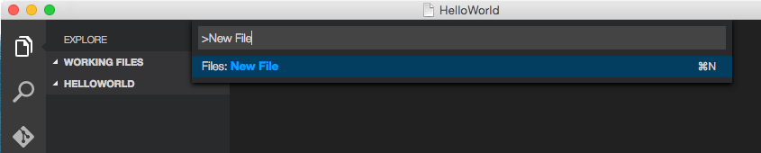

- Wed 21 October 2015
- development
- mani3
- #typescript
エディタ
Visual Studio Code
Install
Homebrewからインストールできた．
$ brew cask update
$ brew cask install visual-studio-code
User Settings
- Visual Studio Codeを開く
$ open ~/Applications/Visual\ Studio\ Code.app
- ⌘, でユーザ設定が開かれる
- settings.json に以下を記述する
{
"editor.fontFamily": "Ricty Diminished",
"editor.fontSize": 16,
"editor.insertSpaces": true
}
Hello World
適当な場所に HelloWorld ディレクトリを作る
Visual Studio Codeから HelloWorld ディレクトリを開く
⇧⌘P を開いて「New Files」とタイプしてファイルを作成する(または`⌘N`)

TypeScriptの [HelloWorld](http://www.typescriptlang.org/Samples#HelloWorld)のコードを貼り付ける
class Greeter { constructor(public greeting: string) { } greet() { return "<h1>" + this.greeting + "</h1>"; } } var greeter = new Greeter("Hello, world!"); document.body.innerHTML = greeter.greet();
⌘N から tsconfig.json を作成する
{ "compilerOptions": { "sourceMap": true } }
⇧⌘P を開いて「Configure Task Runner」とタイプして Enter ． .vscode ディレクトリの下に tasks.json されて以下のように記述されてる
{ "version": "0.1.0", "command": "tsc", "isShellCommand": true, "showOutput": "silent", "args": ["HelloWorld.ts"], "problemMatcher": "$tsc" }
これで ⇧⌘B するとコンパイルされて HelloWorld.js が生成される
⌘N から HelloWorld.html を作成して開くと Hello, World! が表示される
<!DOCTYPE html> <html> <head><title> TypeScript Greeter </title></head> <body> <script src='HelloWorld.js'></script> </body> </html>